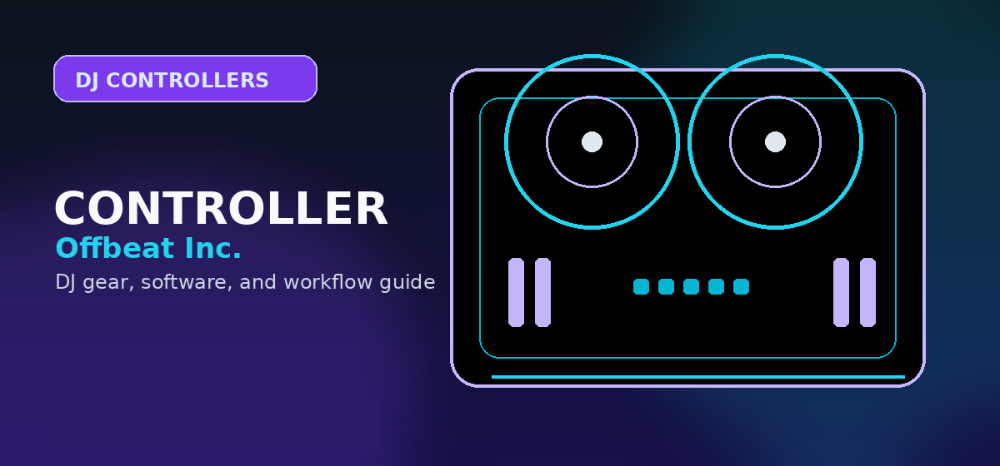

Best DJ Controllers Under $200 in 2026
Top budget DJ controllers under $200 for beginners — real gear that gets you mixing fast without wasting money.

Disclosure: This page uses affiliate links. We may earn a commission at no extra cost to you. Full disclosure →
There are genuinely good DJ controllers under $200. The Pioneer DDJ-FLX4 costs $349 — but the Hercules DJControl Inpulse 500, the Numark Party Mix II, and the Reloop Beatmix 2 MK2 are real instruments that will grow with you for 12-18 months. Here's what we found testing each of them back-to-back.
Best DJ Controllers Under $200 2026: Comparison Table
| Controller | Price | Jog Size | Software Included | Performance Pads? | Best For |
|---|---|---|---|---|---|
| Hercules DJControl Inpulse 500 | ~$199 | 114mm | Serato DJ Lite + DJUCED | ✅ 8 pads | Best overall beginner controller |
| Numark Party Mix II | ~$79 | 63mm | Virtual DJ LE | ❌ | Absolute starter, budget strict |
| Reloop Beatmix 2 MK2 | ~$149 | 100mm | Serato DJ Lite | ✅ 8 pads | Serato users, mid-range build |
| Denon DJ MC2000 | ~$69–$89 used | 101mm | Serato DJ Intro | ✅ 8 pads | Used market strong value |
| Native Instruments Traktor S2 MK3 | ~$150–$200 used | 130mm | Traktor Pro 3 | ✅ 8 pads | Best used-market find under $200 |
1. Hercules DJControl Inpulse 500 — Best Overall Under $200
The Hercules Inpulse 500 is designed with learning in mind: it includes an AI-guided mixing feature that displays visual cues in DJUCED software showing when to mix in and out, what cue should sound like before a mix, and how to use the EQ to transition smoothly. For complete beginners who haven't had any formal instruction, these visual guides dramatically reduce the time to first clean mix.
Confirm today’s price, stock, and return policy before buying.
The 114mm jog wheels (compared to 63mm on the Numark Party Mix or 100mm on the Reloop Beatmix) are large enough to start developing scratch technique — not club-standard (which is 206mm), but trainable. The 8 performance pads support hot cues, loop roll, and beatjump, covering the fundamentals of modern DJ performance.
The audio interface is built in, so you don't need a separate soundcard. Connect the master outputs to speakers, plug in headphones for cue monitoring, and it's a complete setup in one device.
Pros
- AI-guided mixing assistance — fastest learning path for complete beginners
- 114mm jog wheels — the largest in this price range
- Both Serato DJ Lite AND DJUCED included — try both software options before committing
- Built-in soundcard with headphone cue monitoring
- 8 RGB performance pads for hot cues, loops, and effects
Cons
- Not Pioneer layout — habits learned here don't directly transfer to club equipment
- Plastic construction — less robust than metal-chassis controllers at higher prices
- AI guide features require DJUCED; Serato DJ Lite users use the hardware without AI prompts
Best for: Complete beginners who have never used a DJ controller and want structured guidance. Ideal for home practice with minimal self-teaching overhead.
Hercules Inpulse 500 on Amazon →2. Numark Party Mix II — Best Budget Entry Point
The Numark Party Mix II is the most entry-level serious DJ controller available. At $79, it includes a built-in light show (sync'd to music via the Party Mix software integration), Virtual DJ LE software, and a basic 2-channel mixer with 3-band EQ. The 63mm jog wheels are very small — marginally adequate for basic mixing but not for scratch practice.
Confirm today’s price, stock, and return policy before buying.
What justifies its place on this list despite the limitations: the Party Mix II teaches the fundamental layout of a DJ controller without requiring a significant investment. The physical layout (jog plates, volume faders, EQ, crossfader, cue buttons) is identical in concept to controllers five times more expensive. Skills learned on the Party Mix II translate conceptually to all DJ software and controllers, even if the physical feel is budget-apparent.
Pros
- Best price in the category ($79) — lowest risk entry point
- Virtual DJ LE included with subscription access to Virtual DJ's full library features
- Built-in LED light show — genuine entertainment value at small events
Cons
- 63mm jog wheels are too small for scratch technique development
- No performance pads — can't practice hot cues, loops, or samples
- Lightweight chassis doesn't inspire confidence during active use
3. Reloop Beatmix 2 MK2 — Best Mid-Range Build Quality
Reloop is a German DJ hardware manufacturer with a strong reputation for build quality that punches above its price point. The Beatmix 2 MK2 has a metal chassis, rubberized knobs that resist slipping, and a crossfader that feels noticeably better than the one in the Hercules Inpulse 500 or the Numark Party Mix II.
Confirm today’s price, stock, and return policy before buying.
The 100mm jog wheels sit between the Inpulse 500 and the Numark Party Mix in terms of size — adequate for developing good cueing habits and basic scratch cuts. Serato DJ Lite is included, which is the most commonly used introductory DJ software at this price point and has the clearest upgrade path to the paid Serato DJ Pro for serious DJs.
What Jog Wheel Size Actually Means for DJs
Jog wheel diameter directly affects how natural beatmatching and scratch technique feel. Here's the practical breakdown:
- 50-75mm: Most budget controllers. Adequate for tempo nudging only. Scratch technique feels unnatural.
- 100-130mm: Mid-range controllers (Reloop, Hercules 500, Pioneer DDJ-200). Good for developing basic technique. Scratch possible but imprecise.
- 150mm+: Mid-high controllers (Pioneer DDJ-400 and above). Scratch-capable. Technique transfers to club gear.
- 206mm: Pioneer CDJ club standard. Full scratch precision.
For most beginners learning to blend tracks: 100mm+ is sufficient. For anyone who wants to develop scratch technique from day one: the Hercules Inpulse 500 at 114mm or a used Pioneer DDJ-FLX4 at 127mm are the minimum worth buying.
Should You Buy New or Used Under $200?
The used DJ controller market under $200 contains genuine opportunities. Consider:
- Native Instruments Traktor S2 MK3: Retailed at $299; regularly found used for $150-200. Includes Traktor Pro 3 (full version), 130mm jog wheels, and solid metal construction. Only downside: Traktor is less popular in clubs than Serato or rekordbox.
- Pioneer DDJ-SB3: Retailed at $249; found used for $150-200. Pioneer layout with 127mm jog wheels. Serato DJ Lite included. This is probably the best used-market find if you want Pioneer club-layout habits at the budget price.
- Denon MC2000: Found for $69-89 used. Has 101mm jog wheels and 8 performance pads — better feature set than the Numark Party Mix at similar price.
Where to Buy: Budget DJ Controllers
What You Can and Can't Expect Under $200
Controllers under $200 have improved dramatically in the last five years. The current entry-level market offers genuine professional features that would have cost $400-$500 a decade ago. Here is an honest review of what the under-$200 bracket does and does not include:
| Feature | Under $200 Reality |
|---|---|
| Jog wheel size | Typically 5 inch; smaller than professional (typically 7-8 inch) but functional for learning |
| Build quality | Plastic throughout; less durable than mid-range options but adequate for home use |
| Software included | Usually a "Lite" version — check if the included software covers your needs before purchasing |
| Audio output | RCA stereo pair; fully compatible with most consumer and prosumer speaker systems |
| Microphone input | Usually included, but 3.5mm rather than XLR standard on most budget units |
| Performance pads | 8 per deck standard; some models include 16 |
| EQ and filters | 3-band EQ standard; filter controls may be absent at lowest price points |
| MIDI mapping | Full MIDI mapping typically supported; allows use with any DJ software |
Top Picks Under $200
These models consistently rank highest in user reviews and community recommendations for the under-$200 bracket:
- Pioneer DDJ-200 (~$249 MSRP, frequently discounted to ~$199) — includes full Rekordbox DJ, the industry-standard software. The Bluetooth connectivity is a useful bonus for mobile practice. Best overall choice in this price range.
- Hercules DJControl Inpulse 300 MK2 (~$149) — includes Serato DJ Lite and DJUCED. The 16-pad layout is a genuine advantage at this price point. Recommended for users interested in Serato.
- Numark Party Mix II (~$99) — extremely budget-friendly entry point with a built-in 3-LED light show. Limited features but sufficient for absolute beginners wanting to test the hobby before committing more budget.
- Roland DJ-202 (~$199-249) — includes Roland's built-in drums and TR sequencer, unique at this price; excellent choice for DJs wanting to incorporate live beat-making
Software Upgrade Costs
Many under-$200 controllers include "Lite" software versions with feature restrictions. Check the upgrade cost before purchasing if you need specific features:
- Serato DJ Pro: $9.99/month or $199 perpetual — upgrades from Serato DJ Lite; adds recording, 4 decks, sampler, advanced FX
- Rekordbox DJ (full): Free with most Pioneer controllers; includes all features with compatible hardware
- Traktor Pro: $99/year — full Traktor licence from Native Instruments; included free with some Traktor-certified hardware
- Virtual DJ: Free for home use; $299/year for professional use — works with virtually any MIDI controller
Expert Tips and Key Considerations
Before making your final decision, review these expert-level considerations from experienced DJs and producers in the community:
- Jog wheel feel directly impacts how enjoyable learning becomes — 7-8 inch jogs on professional controllers are noticeably more responsive for scratching and nudging
- Software compatibility determines long-term value — Always confirm your chosen software works natively with the controller model — native integration unlocks features MIDI mode cannot
- USB bus power vs external adapter — Controllers powered via USB bus (no external adapter required) are more portable and one fewer cable to manage
- Platters with tension adjustment — Adjustable platter tension is important for scratch DJs; fixed-tension platters are adequate for mixing-style DJs
- Pitch range settings — A wider pitch range (±16-32%) gives more mixing flexibility, particularly useful when mixing slower and faster music in the same set
- Cue button placement — Large, clearly positioned cue buttons are especially important for live performance — wrong button triggers during a set are audible
- Loop in/out controls — Dedicated loop in/out buttons separate from performance pads allow loop creation without mode-switching during a live performance
- Internal sound card quality — The built-in audio interface quality varies significantly at different price points — check headphone output impedance for split-cue compatibility
- Rekordbox and Serato certification — Pioneer controllers certified for both Rekordbox and Serato (via HID mode) offer the broadest software flexibility over the controller's lifetime
- Firmware update availability — Check the manufacturer's download page for recent firmware updates — active firmware support indicates the product is still maintained
- Community support resources — Popular controller models have extensive YouTube tutorial libraries that significantly ease the learning curve for new owners
- Flight case compatibility — If you plan to transport equipment regularly, confirm that compatible flight cases or carry bags are available for your specific controller model
- Resale market depth — Popular models (especially Pioneer DDJ series) have strong resale markets — a consideration if you plan to upgrade within 1-2 years
- Pad sensitivity adjustment — Velocity-sensitive pads can be adjusted in most DJ software — check the default sensitivity setting before assuming the pads are unusable
- Beat FX quality differences — The quality of built-in beat FX varies between controller tiers; lower-budget controllers often have simpler, less musical-sounding effects
How to avoid wasting money under $200
Under $200, the safest controller is the one that teaches real DJ habits without forcing an immediate upgrade. Prioritize headphone cueing, a usable audio output path, stable software support, and jog wheels that feel consistent enough for timing practice.
A cheap controller is a poor value if it cannot connect cleanly to speakers, makes cueing awkward, or locks you into software you do not want to keep using.
Buying advice and compatibility checks
Use this section to sanity-check the sub-$200 DJ controller against your actual setup before comparing prices.
Best fit
First-time DJs who need a real cue/headphone workflow before spending serious money.
Skip if
Mobile-event DJs, scratch-focused buyers, or anyone who needs balanced outputs, booth routing, or durable gig hardware.
Compatibility checks
Budget controllers often ship with limited software versions. Check whether recording, streaming, stems, and hardware unlocks are included or paid upgrades.
2026 update
The cheapest usable controllers now compete on app compatibility and USB-C convenience, but physical I/O is still limited.
Price caveat
A $99 controller can become a bad buy if it forces immediate software, cable, or audio-interface upgrades.
Recommendation logic
Favor controllers that teach transferable deck/mixer habits over novelty lights or phone-only shortcuts.
| Buying check | What to verify | Why it matters |
|---|---|---|
| Setup fit | Inputs, outputs, operating system, software tier, and accessories | Prevents buying gear that looks right but fails in the actual rig. |
| Upgrade path | Whether the product still makes sense after six to twelve months | Reduces duplicate purchases and rushed upgrades. |
| Total cost | Required cables, cases, subscriptions, replacement parts, and backups | The lowest listing price is often not the true working setup cost. |
Official spec and support links
Check current specs, supported software, firmware, and accessory requirements at the source before buying.
Frequently Asked Questions
Can you learn real DJ skills on a $200 controller?
Yes. The fundamental techniques of beatmatching, EQ transitions, and cueing can be learned on any quality 2-channel controller with jog wheels. The Hercules Inpulse 500 specifically is designed for skill building, with AI-guided learning features. The skills you learn on the Inpulse 500 transfer directly to professional Pioneer or Denon gear — the layout is different, the concepts are identical.
What DJ software works with budget controllers?
Most controllers under $200 include Serato DJ Lite or Virtual DJ LE — both fully functional introductory versions. Serato DJ Lite supports basic mixing, cueing, and library management. Virtual DJ LE has similar features plus additional automation tools. For the Hercules Inpulse series, DJUCED (Hercules' own software) is specially designed to work with the AI learning features. All three are legitimate starting points.
Do I need a laptop to use a DJ controller?
Yes — all controllers in this guide require a computer running DJ software to function. The controller does not have standalone playback capability (no internal storage or screen for track browsing). You'll need a Mac or Windows laptop with at least 8GB RAM and an SSD. For software recommendations, see our best DJ software for beginners guide .
How long does a DJ controller under $200 last?
For bedroom practice, 3-5 years with normal use is reasonable for the Hercules Inpulse 500 or Reloop Beatmix. The Numark Party Mix II is a lighter build and may show wear sooner with daily use. The biggest wear items on any controller are the crossfader (test before buying used) and the jog wheel tactile feel (should feel smooth with consistent resistance). Most controllers have user-replaceable crossfaders.
Should I buy the Pioneer DDJ-200 instead?
The Pioneer DDJ-200 ($149) is a viable alternative to the Hercules Inpulse 500 — it has the Pioneer brand, 127mm jog wheels, and a layout that more closely matches club CDJ setups. The trade-off: no AI learning features, no performance pads (the DDJ-200 is pad-less at this price). For pure Pioneer club-compatibility preparation, the DDJ-200 makes sense. For feature-complete learning, the Hercules Inpulse 500 wins.
Ultra-budget buyer guardrail
Under-$200 controllers are best for testing whether DJing is fun, not for building a reliable gig setup. Before clicking out, confirm headphone cueing, supported software, speaker output, and whether the included app is limited. If the buyer already knows they will practice weekly, compare the under-$300 guide and beginner controller picks; the better long-term buy may cost less than replacing a too-limited starter.